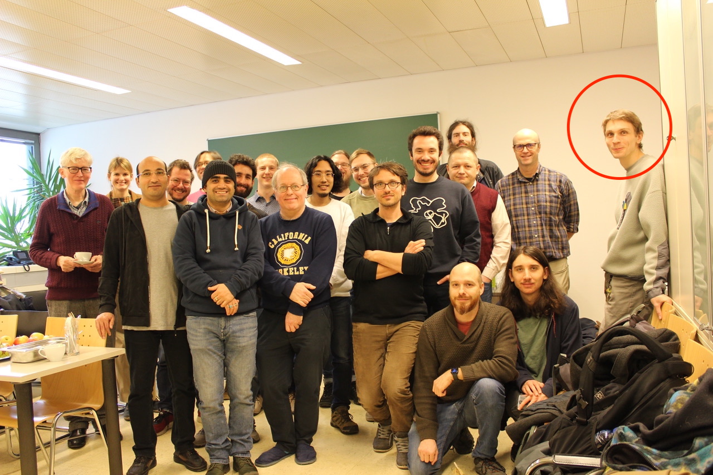

<!DOCTYPE html>
<html lang="en">
  <head>
    <meta charset="utf-8">
    <title>Conferences</title>
  </head>
</html>


<a href="https://itas2019.iitp.ru">Information and Transmission Systems 19'</a> <br> 
  <i>Hosted by IITP RAS, Sept. 2019</i><br><br>

Formal methods of Software design and verification<br>
  <i>Hosted by Moscow State University at Sirius, Russia, Nov. 2021</i><br><br>

  <br>

<a href="https://advances.assafrinot.com">Advances in Set Theory 2022</a><br> 
  <i>Hosted by Hebrew University, Jul. 2022</i><br><br>

  <br>

<a href="https://dmg.tuwien.ac.at/sandramueller/conferences/TutorialLarson2023/">P-max Tutorial by Paul Larson</a><br> 
  <i>Hosted by TU Wien, Jan. 2023</i><br><br>

  <br>

<a href="https://www.uni-muenster.de/MathematicsMuenster/events/2023/young_set_theory.shtml">Young Set Theory 2023</a><br> 
<i>Hosted by WWU Münster, May-Jun. 2023</i><br><br>

<br>

<a href="https://ims.nus.edu.sg/events/sslogic2023/">IMS Graduate Summer School in Logic</a><br> 
  <i>Hosted by National University of Singapore, Jun-Jul. 2023</i><br><br>

  <br>
  <br>

  <a href="https://www.uni-muenster.de/MathematicsMuenster/events/2023/young_set_theory.shtml">Wormshop 2023</a><br> 
<i>Hosted by University of Bern, Nov. 2023</i><br><br>

<br>

<br><br><br><br><br><br><br><br><br><br><a href="index.html">[main page]</a><br><br>

        

        